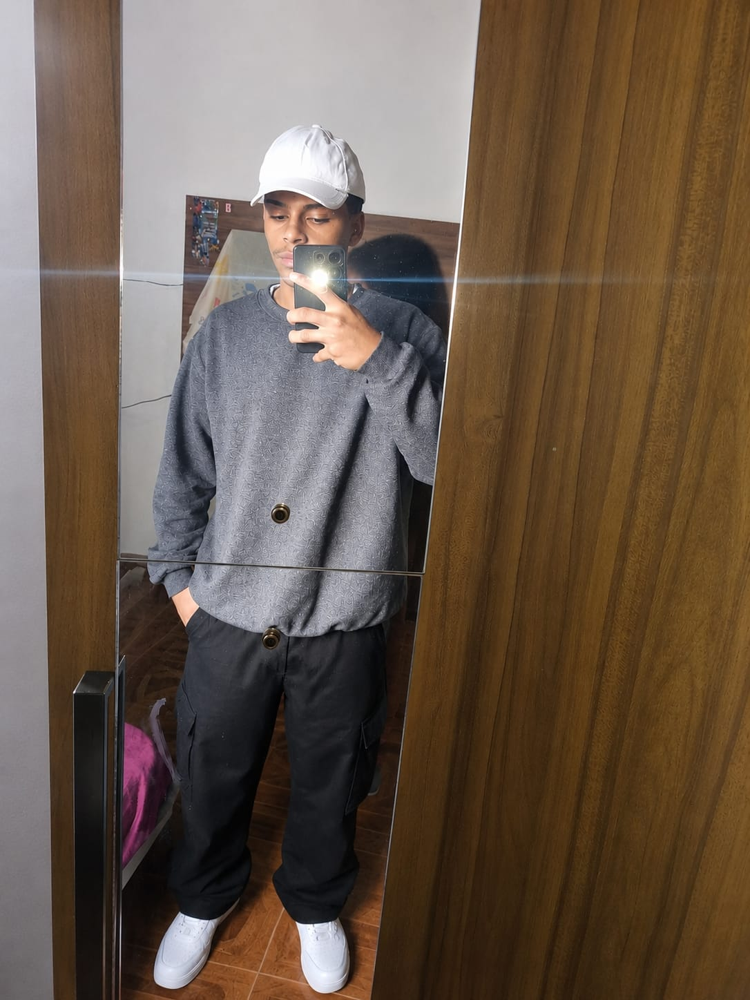

Olá! Me chamo Vinicius, sou 💻 Desenvolvedor Web e apaixonado por programação e tecnologia. Moro em Capelinha - MG e trabalho para transformar ideias em projetos digitais funcionais, bonitos e que realmente atendem ao que você precisa.
Comecei minha jornada estudando lógica de programação e desenvolvimento web, e hoje domino ferramentas como HTML, CSS e JavaScript. Gosto de criar códigos organizados, fáceis de manter e que funcionem perfeitamente em celulares, tablets e computadores.
Meu objetivo é ajudar pessoas e empresas a marcarem presença na internet com qualidade, seja criando projetos novos, ajustando o que já existe ou resolvendo desafios técnicos. Sempre busco aprender coisas novas e me manter atualizado com o que há de melhor e mais moderno no mercado.
💡 Quer saber exatamente como posso ajudar no seu projeto?
Conheça todos os meus trabalhos e soluções na página 🛠️ Serviços — tenho certeza que tem algo perfeito para o que você precisa!